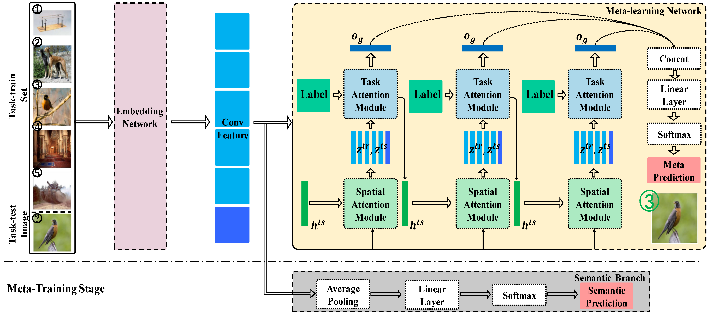

<div class='container'>
  <header class="masthead text-center">

    <!--=================Biography==========================-->
    <table width="100%" align="center" border="0" cellspacing="0" cellpadding="30">
      <tr>
        <td width="67%" valign="middle">
          <!-- <p align="center">
            <name>Shipeng Yan</name>
          </p> -->
          <p align="left">
            <i>Currently I am a second-year graduate student in <a href="http://plus.sist.shanghaitech.edu.cn" target="_blank">PLUS lab</a>, ShanghaiTech university, supervised by <a href="https://xmhe.bitbucket.io" target="_blank">Xuming He</a>. Previously, I received my undergraduate degree from Harbin Institute of Technology in 2017<br>
            <br>
            My research interests lie in computer vision and machine learning. Particularly, my current research focuses on: 1)Few/Low-shot learning 2) Representation Learning
            </i>
          </p>

        </td>
        <td width="33%">
          <div style="width:1px; height:1px; visibility:hidden; overflow:hidden">
            
          </div>
          
        </td>
      </tr>
    </table>


      <!--=================News==========================-->
      <!-- <h3 align="left"><a id="news"></a> <br>News</h3>
      <ul style="list-style: none;">
        <li><span class="glyphicon glyphicon-th-list"></span>
          [03/2019] Our paper <a href="https://xinntao.github.io/projects/DNI"><i>Deep Network Interpolation for
              Continuous Imagery Effect Transition</i></a> to appear in CVPR 2019.
        </li>
        <li><span class="glyphicon glyphicon-th-list"></span>
          [08/2018] Our SuperSR team won the third track of the <a href="https://www.pirm2018.org/PIRM-SR.html">2018 PIRM
            Challenge on Perceptual Super-Resolution</a>. Check the report <a
            href="https://arxiv.org/abs/1809.00219"><i>ESRGAN</i></a> for more details.
        </li>
        <li><span class="glyphicon glyphicon-th-list"></span>
          [06/2018] We won the <a href="http://www.vision.ee.ethz.ch/ntire17/NTIRE">NTIRE 2018 Challenge on Single Image
            Super-Resolution</a> as first runner-up and ranked the first in the <i>Realistic Wild ×4 conditions</i> track.
        </li>
        <li><span class="glyphicon glyphicon-th-list"></span>
          [02/2018] Our paper <a href="http://mmlab.ie.cuhk.edu.hk/projects/SFTGAN/"><i>Recovering Realistic Texture in
              Image Super-resolution by Deep Spatial Feature Transform</i></a> to appear in CVPR 2018.
        </li>
        <li><span class="glyphicon glyphicon-th-list"></span>
          [07/2017] Our HelloSR team won the <a href="http://www.vision.ee.ethz.ch/ntire17/NTIRE">NTIRE 2017 Challenge on
            Single
            Image Super-Resolution</a> as first runner-up.
        </li>
      </ul> -->

      <!-- <p>
      <i>Currently I am a second-year graduate student in <a href="http://plus.sist.shanghaitech.edu.cn" target="_blank">PLUS lab</a>, ShanghaiTech university, supervised by <a href="xmhe.bitbucket.io" target="_blank">Xuming He</a>. Previously, I received my undergraduate degree from Harbin Institute of Technology in 2017<br>
      
      My research interests lie in computer vision and machine learning. Particularly, my current research focuses on: 1)Few/Low-shot learning 2) Representation Learning
      </i>
    </p> -->

        <!-- News -->
        <div class="content" style="z-index:1;position:relative">
          <div class="text">
            <h3 style="margin-bottom:.5em" align="left">News</h3>
            <!-- <ul style="padding-bottom:1em">
              <li> 1 paper accepted by <a href="#publications">CVPR 2018.</a> </li>
              <li>Became master student in ShanghaiTech University.</li>
              <li>Graduated from Southeast University.</li>
            </ul> -->
            <ul style="padding-bottom:1em">
              <li><b><a href="http://proceedings.mlr.press/v97/zhang19f/zhang19f.pdf">LatentGNN: Learning Efficient Non-local Relations for Visual Recognition</a> </b> was accepted by <B>ICML 2019</B>.</li>
              <li><a href="https://xmhe.bitbucket.io/papers/stanet_aaai19.pdf"> A dual-attention network for few-shot learning</a> was accepted by <B>AAAI 2019</B> with a acceptance reate at <b>16%</b>.</li>
            </ul>
          </div>
        </div>

       <!--=================Publications==========================-->
    <h3 align="left"> <a id="publication"></a> <br>Publications</h3>
    <!--<h4>2018</h4>-->


    <table width="100%" align="center" border="0" cellspacing="0" cellpadding="0">

      <!--=================FAUN==========================-->
      <tr>
        <td width="35%">
          <div class="paper-img"></div>
        </td>
        <td align="left" valign="top" width="65%">
          <paper-title>Learning Efficient Feature Augmentation with Non-local Relations for Visual Recognition
          </paper-title>
          <!-- <br /><br /> -->
          <div class=" paper-info">
            <a href="http://syzhang.me/">Songyang Zhang</a>,
            <b>Shipeng Yan</b>,
            <a href="http://xmhe.bitbucket.io">Xuming He</a>,
            <br>
            <em>ICML 2019 </em>
          </div>
          <!-- <span>[
            <a href="https://arxiv.org/abs/1811.10515"><strong>PDF</strong></a>]&nbsp;[
            <a href="https://xinntao.github.io/projects/DNI"><strong>Project Page</strong></a>]&nbsp;[
            <a href="https://github.com/xinntao/DNI"><strong>Codes</strong></a>]&nbsp;[
            <a href="https://xinntao.github.io/projects/DNI_bib.html"><strong>BibTex</strong></a>]
          </span> -->
        </td>
      </tr>

      <!--=================STANet==========================-->
      <tr>
        <td width="35%">
          <div class="paper-img"></div>
        </td>
        <td align="left" valign="top" width="65%">
          <paper-title>A Dual Attention Network with Semantic Embedding for Few-shot Learning</paper-title>
          <!-- <br /><br /> -->
          <div class=" paper-info">
            <b>Shipeng Yan*</b>,
            <a href="http://syzhang.me/">Songyang Zhang*</a>,
            <a href="http://xmhe.bitbucket.io">Xuming He</a>,
            <br>
            <em>AAAI, 2019(* means equal contribution)</em>
          </div>
          <span>[
            <a href="https://xmhe.bitbucket.io/papers/stanet_aaai19.pdf"><strong>PDF</strong></a>]
            <!-- &nbsp;[ -->
            <!-- <a href="https://github.com/xinntao/ESRGAN"><strong>Project Page | Codes</strong></a>]&nbsp;[
            <a href="https://xinntao.github.io/projects/ESRGAN_bib.html"><strong>BibTex</strong></a>] -->
          </span>
        </td>
      </tr>
    </table>

    <!-- <p>
      <center>
        <script type='text/javascript' id='clustrmaps'
          src='//cdn.clustrmaps.com/map_v2.js?cl=ffffff&w=300&t=tt&d=67did0CAdncq-M1USj88a8nvNyHJzr771w9jz5KE4sQ&co=2d78ad&ct=ffffff&cmo=3acc3a&cmn=ff5353'></script>

        <br>
        &copy; Xintao Wang | Last updated: April 19, 2019
      </center>
    </p> -->
    <span style="display: block; margin-bottom: 3em"></span>


      <!-- <span style="display: block; margin-bottom: 1em"></span> -->
        <!-- <span style="display: block; margin-bottom: 3em"></span> -->
<!-- 
      <a href="https://github.com/KordingLab"><i class="fa fa-github"></i> KordingLab</a>&nbsp;&nbsp;&nbsp;
      <a href="https://twitter.com/KordingLab"><i class="fa fa-twitter"></i> KordingLab</a>&nbsp;&nbsp;&nbsp;
      <a href="mailto:kording@upenn.edu"><i class="fa fa-envelope-o"></i> kording@upenn.edu</a>
      </p> -->

      <!-- <a class="twitter-timeline" href="https://twitter.com/KordingLab" data-widget-id="695051708246941697">Tweets by @KordingLab</a>
      <script>!function(d,s,id){var js,fjs=d.getElementsByTagName(s)[0],p=/^http:/.test(d.location)?'http':'https';if(!d.getElementById(id)){js=d.createElement(s);js.id=id;js.src=p+"://platform.twitter.com/widgets.js";fjs.parentNode.insertBefore(js,fjs);}}(document,"script","twitter-wjs");</script> -->

    </header>
</div>
